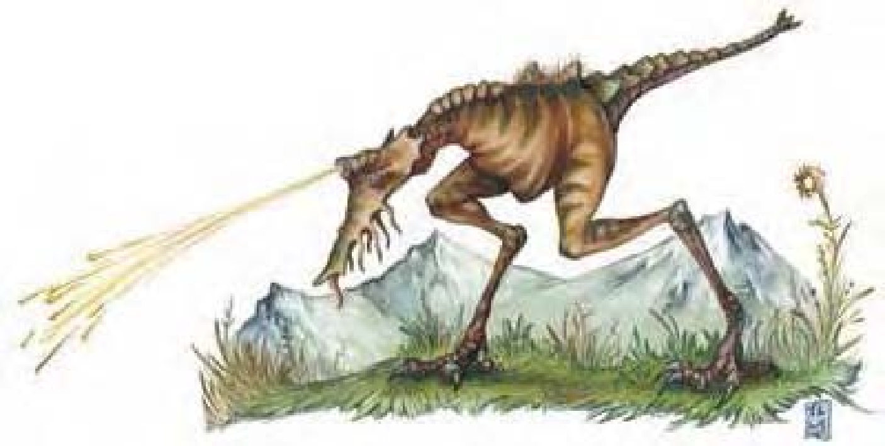

恐龙，又称恐蜥，是种可能与龙有关联的远古兽类。肉食性恐龙有些特性跟龙一样，像尖锐牙齿、凶猛性情、极强的地域观念与残暴的猎杀冲动。草食性恐龙除非受伤，或是为了保护幼兽，否则通常不具攻击性，不过他们在受到惊吓或骚扰时仍可能展开攻击。
恐龙的体型与形态依种类而不同。较大的恐龙偏土褐色，小恐龙则具有较多显眼色彩。大多数恐龙的皮肤肌理均伤痕累累。
恐龙通常居住在人烟罕至的崎岖地形或孤立地域，例如遥远的山谷、无法到达的高原、热带岛屿或是最为茂密的丛林地带。
战斗恐龙善用其庞大体型与速度。迅捷的肉食性恐龙会尾随猎物后方，在掩蔽中静待时机，直到距离够近才进行冲刺。体型庞大的草食性恐龙则通常闯越并践踏敌人。